OFL Foundation
Overview
The OFL foundation provides a uniform API set for base library tasks used by vitamins, replacing part of the OpenSCAD 2d/3d primitives.
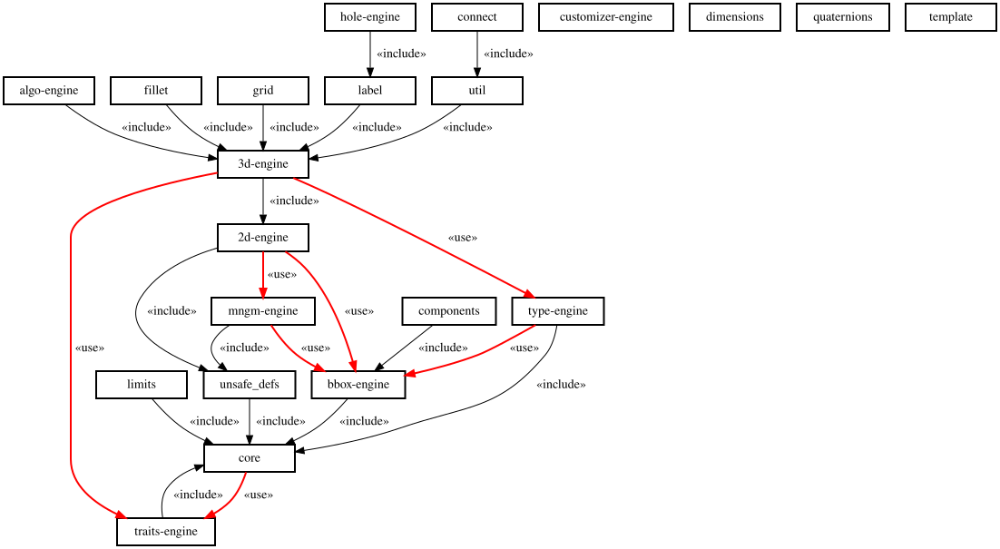
'Objects'
An Object is a key/value list like the following:
type = [
["first property name", "this is a string"], // a string property
["second property name", -3.5], // a number propery
["a flag name"], // a flag
];
APIs
In order to minimize the risk of overlap with other APIs or global constant from other client libraries, every library item has been prefixed in the following way:
- FL_ for constants
- fl_ for APIs
APIs belongs to one of the following categories:
- contructor - function returning an Object;
- getter - function retrieving a value from an Object;
- engine - module responding to a set of predefined Verbs applied to an Object;
- primitive - function or module not leveraging an Object.
Verbs
Any action that modifies the rendering of the scene is called 'Verb'.
A number of predefined verbs are available:
Shape verbs
- FL_ADD - add base shape (no components nor screws);
- FL_ASSEMBLY - add predefined component shape(s);
- FL_DRAW - composite verb, add base and components shapes;
- FL_MOUNT - add mounting accessories shapes;
- FL_FOOTPRINT - adds an Object footprint to scene (usually a simplified FL_ADD);
Bounding block verbs
- FL_PAYLOAD - components payload bounding box;
- FL_BBOX - assembled shape bounding box;
Other verbs
- FL_AXES - draw local reference axes;
- FL_CUTOUT - layout of predefined cutout shapes (±X,±Y,±Z);
- FL_DRILL - layout of predefined drill shapes;
- FL_LAYOUT - layout of custom children shapes;
- FL_SYMBOLS - adds symbols and labels usually for debugging
Relations between draw and bounding box verbs:
| Draw verbs | BB verbs |
|---|---|
| FL_ASSEMBLY | FL_PAYLOAD |
| FL_DRAW | FL_BBOX |
All engine and primitive API signatures are standardized in order to respond to the same verbs with the same behavior/semantic.
Every engine or primitive is implemented to respond to single or multiple Verbs in whatever order, reducing the problem of 'perfect' argument forwarding in case of multiple calls.
Single verb invocation
When a verb is passed as a single value the verb will be trivially executed.
include <OFL/foundation/3d-engine.scad>
// single verb primitive invocation
fl_torus(FL_ADD,a=2,b=3,R=5,$fn=50);
^ ^ ^ ^ ^
| | | | |
| | +---+---+--< other primitive dependent parameters
| |
| +---< verb
|
+---< primitive
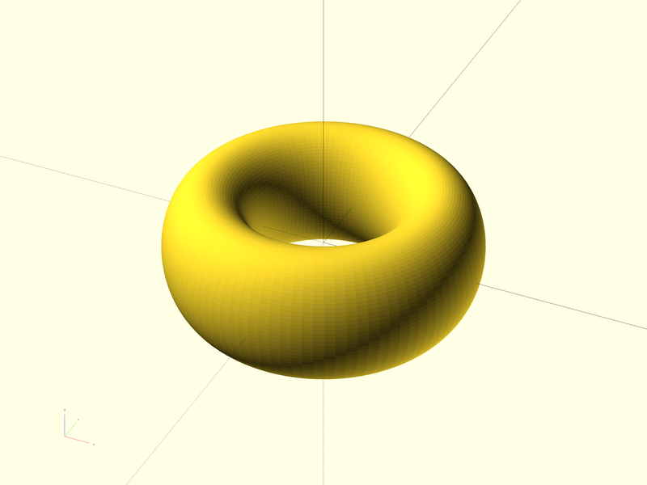
include <OFL/vitamins/magnets.scad>
// single verb engine invocation
fl_magnet(FL_ADD,FL_MAG_M4_CS_D32x6,...);
^ ^ ^
| | |
| | +---< object
| |
| +---< verb
|
+---< engine
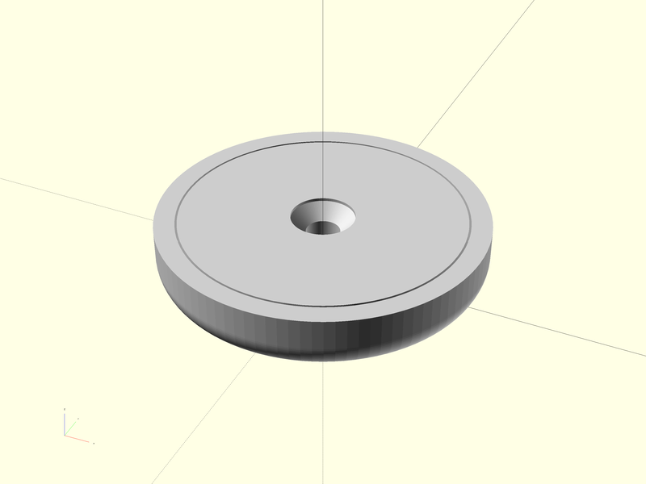
Multiple verb invocation
When a list of verbs is passed, it wil be executed sequentially, as in the following example
include <OFL/vitamins/magnets.scad>
// multiple verb engine invocation
fl_magnet([FL_ADD,FL_MOUNT,FL_AXES,FL_BBOX],FL_MAG_M4_CS_D32x6);
^ ^ ^
| | |
| | +---> object
| |
| +---> verb list executed sequentially
|
+---> engine
so that same invocation of the same primitive will actually perform the following actions:
- add of a magnet shape to the scene (FL_ADD);
- mount shape through predefined screws (FL_MOUNT);
- draw of local reference axes (FL_AXES);
- the object bounding box is shown (FL_BBOX).
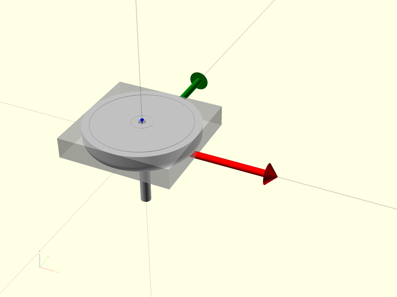
Verbs rendering
Engine's behavior when rendering verbs can be modified injecting well-known values into runtime variables with the same name of the verb. For modifying the FL_ADD rendering, the runtime variable to be used is $FL_ADD, for FL_PAYLOAD is $FL_PAYLOAD and so on.. .
In the previous example we can modify the rendering of the FL_AXES verb
include <OFL/vitamins/magnets.scad>
// multiple verb engine invocation
fl_magnet([FL_ADD,FL_MOUNT,FL_AXES,FL_BBOX],FL_MAG_M4_CS_D32x6,$FL_AXES="DEBUG");
^ ^ ^ ^ ^
| | | | |
| | | | +---> DEBUG rendering
| | | |
| | | +---> runtime modifier for FL_AXES verb
| | |
| | +---> object
| |
| +---> verb list executed sequentially
|
+---> engine
obtaining the reference axes rendering in 'debug' mode
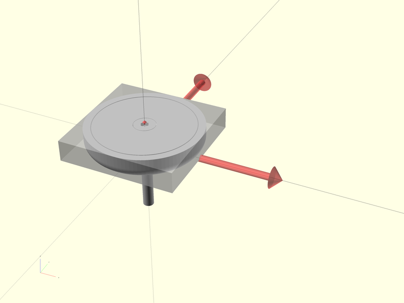
Execution Contexts
OpenSCAD modules have the possibility to manipulate the rendering of children modules realizing complex 2d/3d pipelines. Unfortunately the pipelines built through modules are static, as are the actual parameters passed to children.
The only way by means a parent module can pass dynamic data to children, is by sharing one - or more - special variables. OFL calls every set of documented special variables setup by a parent module for its children as an execution context.
In particular OFL uses static actual parameters for defining the action a module is asked to perform, and the execution contexts for dynamically controlling its behavior.
Execution contexts have usually a constructor module providing special variable initialization and - where needed - supporting internal correlations.
Types of execution contexts
OFL has many execution contexts, below a partial list:
| Name | Description |
|---|---|
| Root | controls the behavior of each OFL verb |
| Debug | controls the global debug flags |
3D positioning and orientation
Every OFL engine manages the following characteristics:
- placement - the 3D octant in which the object is displayed.
- orientation - passed as a direction axis and rotation angle. Internally the resulting direction is evaluated in two vectors, the direction axis (usually +Z) and one orthogonal axis (usually +X). Each Object has a default direction.
Placement
3D space can be divided in eight octants delimited by the system reference semi-axes. Each engine has a default or native position in the space, eventually not corresponding exactly with octants. In order to assign the object position relative to octants, the octant parameter is implemented by all the engines. The value that the octant parameter can assume is a 3d vector whose x,y and z component can be:
| value | semantic |
|---|---|
| undef | native position used |
| -1 | negative semi-axis |
| 0 | centered |
| +1 | positive semi-axis |
so if we want to place an object in the octant defined by the semi-axes +X,+Y,+Z the octant must be [1,1,1]. OFL defines three constants:
X = [1,0,0];
Y = [0,1,0];
Z = [0,0,1];
O = [0,0,0];
so that the value [1,1,1] can be expressed as +X+Y+Z.
We can pass this value to our example for placing the object in the desired octant
include <OFL/vitamins/magnets.scad>
fl_magnet([FL_ADD,FL_MOUNT,FL_AXES,FL_BBOX],FL_MAG_M4_CS_D32x6,octant=+X+Y+Z);
^ ^ ^ ^
| | | |
| | | +---> octant expressed as [1,1,1] ⇒ first octant
| | |
| | +---> object
| |
| +---> verb list executed sequentially
|
+---> engine
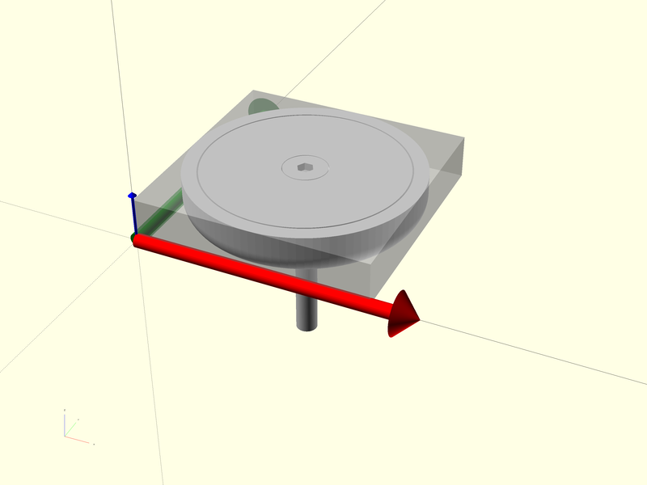
If we want the object centered along the X axis, the octant will be [0,1,1] ⇒ +Y+Z
include <OFL/vitamins/magnets.scad>
fl_magnet([FL_ADD,FL_MOUNT,FL_AXES,FL_BBOX],FL_MAG_M4_CS_D32x6,octant=+Y+Z);
^ ^ ^ ^
| | | |
| | | +---> octant expressed as [0,1,1] ⇒ x==0 means 'centered'
| | |
| | +---> object
| |
| +---> verb list executed sequentially
|
+---> engine
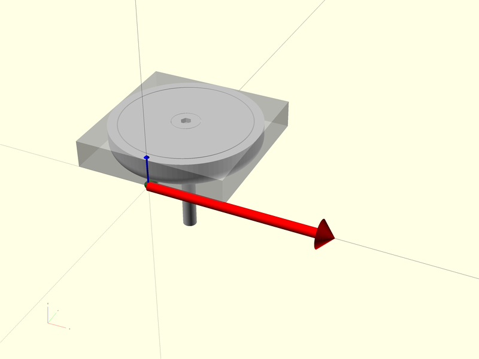
If we want the object centered on the origin the octant will be [0,0,0] ⇒ O (capital 'o')
include <OFL/vitamins/magnets.scad>
fl_magnet([FL_ADD,FL_MOUNT,FL_AXES,FL_BBOX],FL_MAG_M4_CS_D32x6,octant=O);
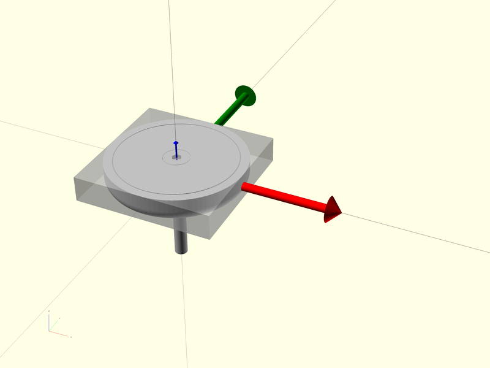
Of course these setting can be mixed with all the possible combination allowed, for example [0,0,-1] ⇒ -Z
include <OFL/vitamins/magnets.scad>
fl_magnet([FL_ADD,FL_MOUNT,FL_AXES,FL_BBOX],FL_MAG_M4_CS_D32x6,octant=-Z);
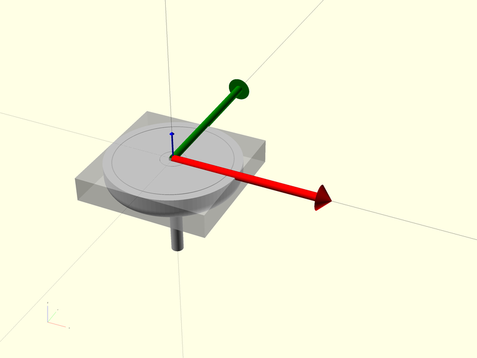
Orientation
3D orientation is managed by engines through the direction parameter actually constituted by a list containing a vector (director) and a rotation angle. When the direction parameter is undef the default value is used (always +Z).
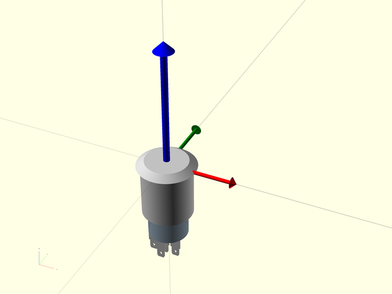
The following code change the orientation from the default +Z to the [-1,-1,1] vector.
include <OFL/vitamins/spdts.scad>
// arbitrary direction vector setup
direction=[-1,-1,+1];
fl_spdt([FL_ADD,FL_AXES],FL_SODAL_SPDT,direction=[direction,0]);
producing a change in the orientation as shown in the following picture.
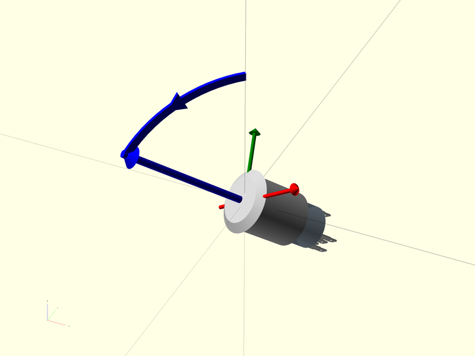
It is possible to combine the change of direction with a rotation around the new axis.
include <OFL/vitamins/spdts.scad>
// arbitrary direction vector
direction = [-1,-1,+1];
angle = 30;
fl_spdt([FL_ADD,FL_AXES],FL_SODAL_SPDT,direction=[direction,angle]);
producing the following result.
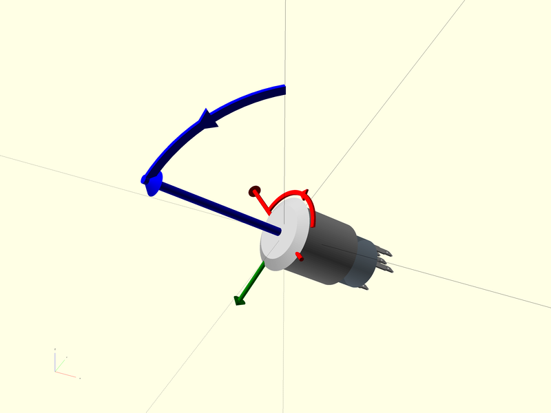
API naming convention
In an attempt to avoid name collision between OFL and any other library, every client accessible API is prefixed with 'fl_' while the rest is in mixed case (first letter lowercase and first letter of each internal word capitalised). The only exception are constructors that - after the 'fl_' prefix - are in camel case.
APIs used internally a file (i.e. not to be used by clients) are prefixed and terminated by '__'.
The following example shows some of the APIs for a countersink component, with a sub namespace 'cs' that follows the general 'fl' one for engines, getters and primitives.
// Constructor
function fl_Countersink(name,description,d,angle) = ...
// Engine
module fl_countersink(verbs,type,direction,octant) { ...
// Getter
function fl_cs_angle(type) = ...
// internal test module NOT to be used by clients
module __test__() { ...
// internal function NOT to be used by clients
function __point__(alpha) = ...
Naming convention for constants
For similar reasons all global constants used in OFL are prefixed with 'FL_' while the rest of the name must be in UPPER CASE.
FL_ADD = "FL_ADD adds shapes to scene.";
FL_ASSEMBLY = "FL_ASSEMBLY layout of predefined auxiliary shapes (like predefined screws).";
FL_AXES = "FL_AXES draw of local reference axes.";
FL_BBOX = "FL_BBOX adds a bounding box containing the object.";
FL_CUTOUT = "FL_CUTOUT layout of predefined cutout shapes (+X,-X,+Y,-Y,+Z,-Z).";
FL_DRILL = "FL_DRILL layout of predefined drill shapes (like holes with predefined screw diameter).";
FL_FOOTPRINT = "FL_FOOTPRINT adds a footprint to scene, usually a simplified FL_ADD.";
FL_LAYOUT = "FL_LAYOUT layout of user passed accessories (like alternative screws).";
FL_PAYLOAD = "FL_PAYLOAD adds a box representing the payload of the shape";
$pecial variables
$pecial variables used in OFL follow the same naming convention used for constants.
| Name | Default | Semantic |
|---|---|---|
| $fl_debug | false | May trigger debug statement in client modules / functions |
| $FL_RENDER | false | When true, disables PREVIEW corrections like FL_NIL |
| $FL_TRACE | -2 | Manages fl_trace() nesting message setting |
OrthoDocs - API documentation
A beta release of the API documentation can be found here.